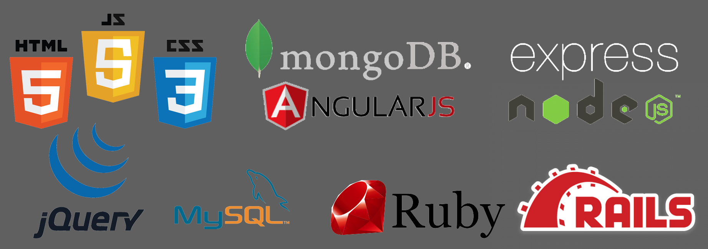

As a creative technician for 20 years, I am both a driven and proven professional to meeting my client and employer's needs. Formally as a broadcast techinician, I excelled in solving technical problems quickly without neglecting the creative and unique demands of the final product. This plus the humility and willingness to constantly adapt and upgrade my skillset to the changing requirements of IT makes me a invaluable and relevant asset to many employers.

